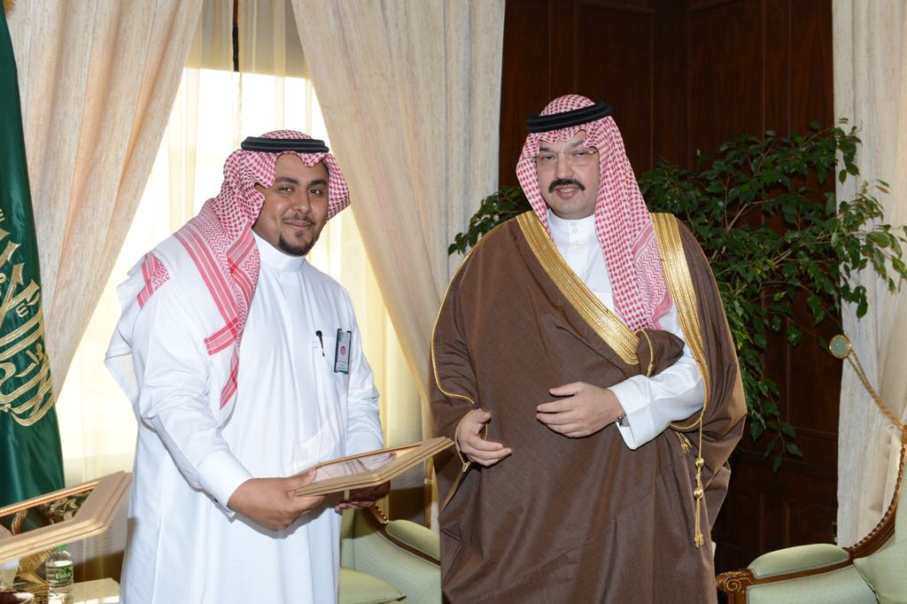
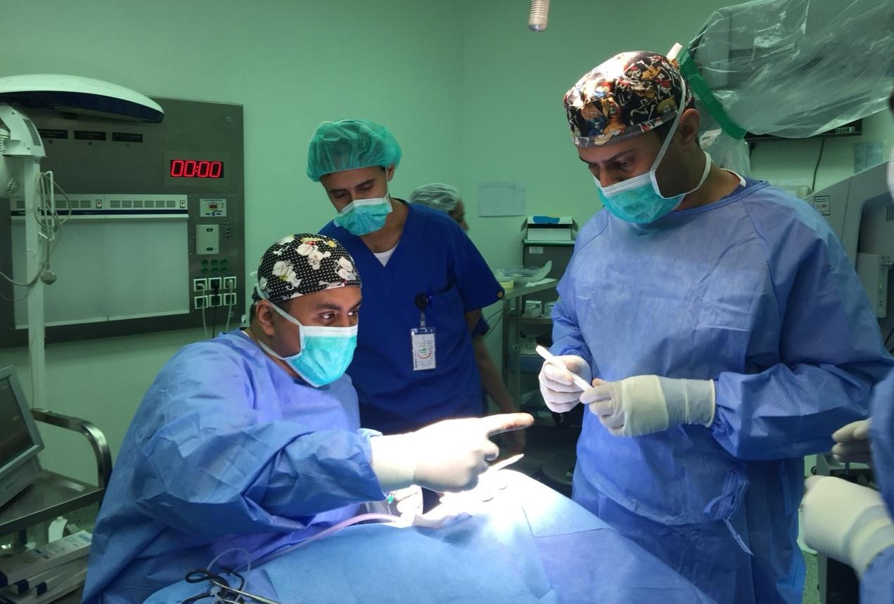

الاعمال والعمليات
بعض العمليات والاعمال

تكريم سمو نائب أمير منطقة عسير للدكتور حسين عتودي لمشاركته الفريق الطبي في اول
عملية زراعة قوقعة بمستشفى أبها للولادة والأطفال

عملية معقدة تكللت بالنجاح لزراعة القوقعه لطفل يعاني من صمم حسي عصبي شديد يمنعه
من
الكلام وتكلل بحمد الله بنجاح